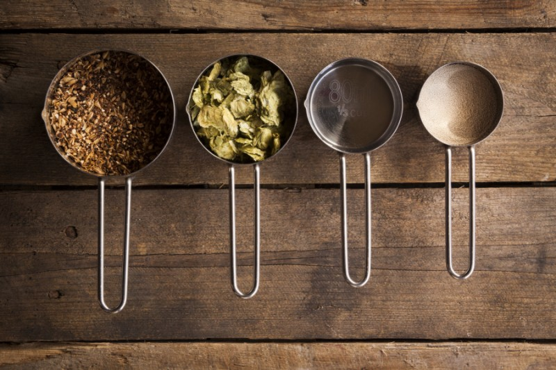

General Ingredients
Beer in general is made of four main ingredients and those are: grain, hops,
yeast and water. There are roughly two main types of beer which are normal “plain” beer
and craft beer. Craft beer is considered more tasteful than normal beer such as the ones you
see in the store like Miller lite, Michelob Ultra and Bud light. These “normal”
beers typically all taste the same because they use pretty much only use the main
four ingredients. The difference between these normal beers is how much of the
main four ingredients there are. Another difference is the alcohol percentage.
Craft beer is typically having a higher alcohol percentage than normal beers.
Craft beers also add extra ingredients such as different hops (which could be
sour, fruity or even bitter). Craft beers such as stouts (darker beers) might
even use different types of yeast or malt such as chocolate malt.
Ingredients Copyright
Now that general ingredients have been discussed, its now time to talk about copyright.
The craft beer world has a lot of similar beers being made year round. The biggest
thing that brewers need to know is how copyright of ingredients work. If a beer is brewed
by a brewery, that brewery may not in any case patent the ingredients. However, the brewery
can apply to patent the way that specific ingredients was prepared. This means if they brewed an
IPA (Indian Pale Ale) and they used the four core ingredients and an extra fuit hops totaling the
ingredients to five, the brewery may patent the way they prepared those five ingredients.
This means if another brewery wants to brew that beer and prepare it the same way, they must
give credit to the brewery that patented that beer.